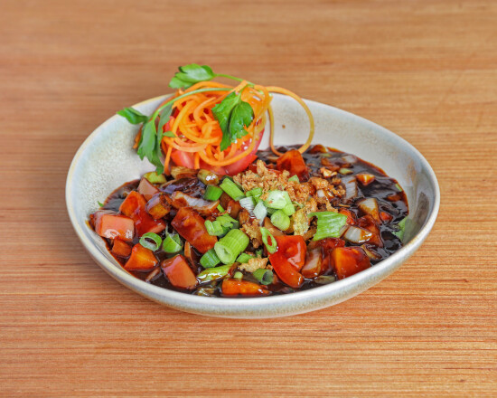
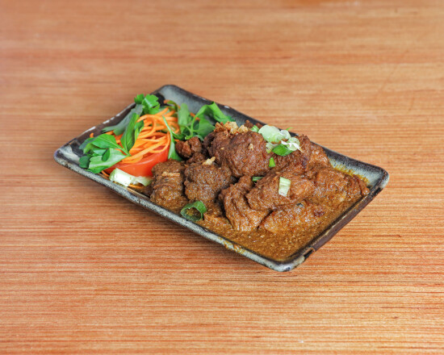
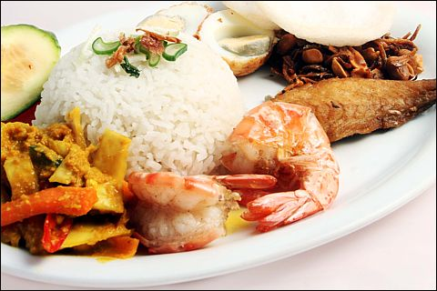
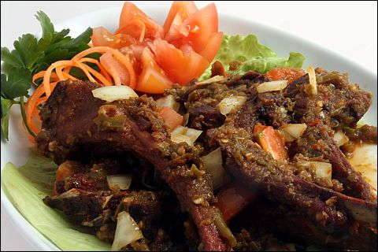
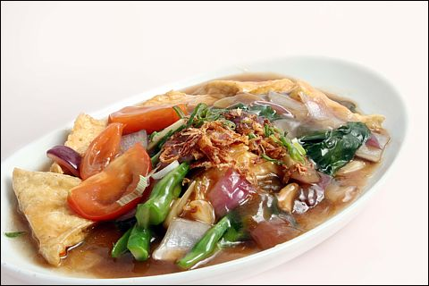

Sate
Grilled chicken, beef or vegetarian skewers with cucumber, onions and peanut sauce.
Authentic Indonesian · West End
A small family-run restaurant on Shaftesbury Avenue—relaxed, generous and happy to guide first-time diners through the menu.

01 · The food
Some dishes are hot, some mild, some spicy and some tangy. Tell us what you like and we will help you build a balanced meal.

Grilled chicken, beef or vegetarian skewers with cucumber, onions and peanut sauce.
Slow-cooked beef with chilli and coconut: deep, aromatic and one of Indonesia’s best-loved dishes.
Indonesian fried rice with mild spices—an easy introduction to the cuisine.
Vegetables and tofu with peanut sauce, made for sharing alongside the table’s other dishes.
All meat is halal. Vegetarian dishes are available. Please tell the team about any allergy when ordering.
02 · For your first visit
Rijsttafel means “rice table”: a shared selection that lets you discover several flavours in one sitting. The Special Rijsttafel brings together eight popular dishes for at least two people.
8
03 · West End evenings
We are on Shaftesbury Avenue, close to Leicester Square and Covent Garden. Tell us your theatre timing when you book and we will help you choose an appropriate reservation time.
04 · Our story
Bali Bali has built its reputation over decades: authentic cooking, personal service and a room where newcomers feel as welcome as regulars. It remains intimate and relaxed—not a fine-dining performance.


05 · What guests notice
Authentic cooking with the depth and flavour guests remember from Indonesia.Recurring review theme
Friendly, helpful service—especially when choosing unfamiliar dishes.Recurring review theme
Excellent value and a reliable choice before a West End show.Recurring review theme
06 · Visit
The address
150 Shaftesbury Avenue
London WC2H 8HL